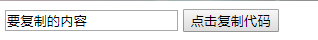

使用原声js实现点击复制
点击复制功能核心的代码就是1
document.execCommand("Copy")
通过这一句代码来进行复制。1
2
3
4
5
6
7
8
9
10
11
12
13<body>
<input type='text' value="要复制的内容" id="copyContent">
<button onClick="copyValue()">点击复制代码 </button>
<script type="text/javascript">
function copyValue()
{
var temp = document.getElementById("copyContent");
temp.select(); // 选中要复制的内容
document.execCommand("Copy"); // 核心代码，复制选中的内容到剪切板
alert("复制成功");
}
</script>
</body>

如果不想让用户看见input等文字输入框，动态设置要复制的值，可以动态创建一个input，将内容设置在内，通过css将其隐藏起来。1
2
3
4
5
6
7
8
9
10
11
12
13
14
15
16
17
18
19<style>
input{
position:fixed;
left:-1000px;
}
</style>
<body>
<input type='text' value="要复制的内容" id="copyContent">
<button onClick="copyValue()">点击复制代码 </button>
<script type="text/javascript">
function copyValue()
{
var temp = document.getElementById("copyContent");
temp.select(); // 选中要复制的内容
document.execCommand("Copy"); // 核心代码，复制选中的内容到剪切板
alert("复制成功");
}
</script>
</body>
现代浏览器都可以使用此方法来进行复制。
由于兼容性和一些方法扩展等原因，可以使用一些现成的js库。
clipboard.js
网上比较方便的插件有clipboard.js,不包含flash，体积小。地址：https://github.com/zenorocha/clipboard.js 。用到的方法本质也是document.execCommand(“Copy”)。
使用方法为npm安装和直接script标签引用。
使用1
new ClipboardJS('.btn');
来初始化代码，需要传入DOM 选择器, HTML 元素, 或者 HTML 元素数组作为参数，来实例化对象。
从另一个元素复制
你可以给目标元素添加一个 data-clipboard-target 属性来实现这个功能。
这个属性的值就是能匹配到另一个元素的选择器。1
2
3
4
5
6
7<!-- Target -->
<input id="foo" value="https://github.com/zenorocha/clipboard.js.git">
<!-- Trigger -->
<button class="btn" data-clipboard-target="#foo">
<img src="assets/clippy.svg" alt="Copy to clipboard">
</button>
从元素本身属性复制
仅需要给目标元素设置一个 data-clipboard-text 属性就可以了。1
2
3
4<!-- Trigger -->
<button class="btn" data-clipboard-text="Just because you can doesn't mean you should — clipboard.js">
Copy to clipboard
</button>
自定义事件
通过触发自定义事件，例如 success 和 error，让你可以设置监听并实现自定义逻辑。1
2
3
4
5
6
7
8
9
10
11
12
13
14
15
16var clipboard = new ClipboardJS('.btn');
clipboard.on('success', function(e) {
console.info('Action:', e.action);
console.info('Text:', e.text);
console.info('Trigger:', e.trigger);
alert('复制成功！')
e.clearSelection();
});
clipboard.on('error', function(e) {
console.error('Action:', e.action);
console.error('Trigger:', e.trigger);
alert('复制失败，请手动复制！')
});
动态设置目标元素
1 | new ClipboardJS('.btn', { |
动态设置文本内容
1 | new ClipboardJS('.btn', { |